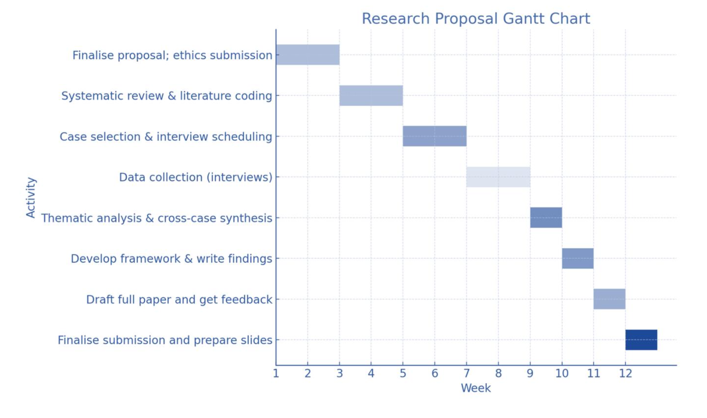

Responsible Adoption of LLMs in E-business: Balancing Business Value and Governance
Zahra Ballaith | Student ID: 28241
The rapid integration of Large Language Models (LLMs) into e-business presents a critical tension: the pursuit of transformative business value against the imperative for robust governance. This research proposal investigates the responsible adoption of LLMs, specifically examining how e-businesses can strategically balance the drivers of innovation, such as operational efficiency, hyper-personalisation, and scalability, with the stringent demands of ethical accountability, compliance, and social trust. Moving beyond a descriptive survey of benefits and risks, the study employs a critical synthesis of existing literature, revealing significant contradictions in empirical findings and a pronounced gap between theoretical governance frameworks and their practical implementation. The central research question asks: What strategies and frameworks can enable e-businesses to reconcile LLM-driven value creation with the mitigation of governance risks related to bias, privacy, and explainability?
An exploratory qualitative methodology is proposed, comprising a focused systematic review of academic and industry literature, complemented by comparative case studies of leading e-commerce firms and semi- structured interviews with industry practitioners. Thematic analysis will be used to map the complex interplay between business objectives and governance mechanisms across key domains, including customer service, personalisation, and internal compliance. The primary expected contribution is a novel, evidence-based framework that explicitly links business Key Performance Indicators (KPIs) to specific governance safeguards, offering actionable guidance for managers and policymakers. This research aims to fill a critical gap in the literature by moving from identifying trade-offs to providing a structured approach for their resolution in practice.
Keywords: Large Language Models; E-Business; Responsible AI; AI Governance; Business Value; Ethics; Personalisation.
The contemporary e-business landscape is undergoing a paradigm shift, driven by the emergence of Large Language Models (LLMs) such as GPT-4, PaLM, and LLaMA. These models are not merely incremental improvements but foundational technologies that redefine core digital capabilities, enabling sophisticated natural language understanding, dynamic conversational interfaces, and the automated generation of complex content (Brown et al., 2020; OpenAI, 2023; Touvron et al., 2023). For e-business, this technological leap promises transformative gains in operational domains such as customer service automation, hyper-personalised marketing, and data-driven decision support, potentially unlocking unprecedented scalability and efficiency.
However, the scholarly and practitioner literature reveals a stark and unresolved contradiction. A body of empirical work documents significant, quantifiable business benefits, including increased conversion rates, reduced operational costs, and enhanced customer satisfaction in retail and service contexts (e.g., Smith & Yang, 2023). Conversely, a parallel and critical stream of research highlights profound governance challenges, including algorithmic bias, data privacy violations, a lack of explainability, and potential workforce disruption, with these risks being particularly acute in regulated sectors like finance and healthcare (Zhang et al., 2019; Ji et al., 2023; Leslie, 2020). This divergence points to a fundamental schism: the discourse on technological innovation often proceeds in isolation from the discourse on ethical and responsible implementation.
This research proposal, therefore, frames the adoption of LLMs not merely as a technical or strategic challenge, but as a critical balancing problem. The central inquiry is: how can e-business firms proactively capture the substantial business value offered by LLMs while simultaneously designing and implementing robust governance mechanisms that mitigate associated ethical, legal, and operational risks? To address this, the study adopts a deliberate analytical framing: it positions business value (encompassing efficiency, personalisation, and scalability) as the primary driver of adoption, while treating governance and ethics not as peripheral concerns, but as the essential boundary conditions that determine whether the created value is sustainable, legitimate, and resilient. By critically synthesising existing evidence, comparing sectoral experiences, and engaging with practitioner insights, this research aims to develop a pragmatic framework that moves beyond identifying trade- offs to providing a structured pathway for the responsible adoption of LLMs in e-business.
How can e-businesses responsibly adopt Large Language Models in ways that maximise business value while ensuring governance, ethical compliance and customer trust?
The primary aim of this research is to develop and propose a novel, evidence-based framework that enables e- businesses to navigate the complex trade-offs inherent in LLM adoption. This will be achieved by critically evaluating existing adoption strategies to elucidate the conditions under which business value and robust governance can be synergistically balanced, rather than viewed as a zero-sum game.
Recent research situates LLMs as powerful enablers of automated dialogue, content generation, and context- aware recommendations in e-business (Brown et al., 2020; Zhang et al., 2019). Empirical studies in retail report increases in conversion rates, faster response times, and improved customer satisfaction from LLM-driven personalization and chatbots (Yang et al., 2023). Similarly, LLMs have been reported to speed up managerial tasks, summarising reports and extracting insights (Bommasani et al., 2021).
Nonetheless, an emergent corpus of literature emphasises the governance risks of these systems. Hallucinations (spurious outputs), representational bias, and data-privacy challenges can undermine trust and lead to regulatory exposure (Ji et al., 2023; Bender et al., 2021). High-stakes sectors demonstrate this tension: while LLM-assisted fraud detection improves throughput in some studies (Liu et al., 2023), others document false positives and compliance headaches (Ji et al., 2023). Similarly, retail benefits contrast with healthcare risks where incorrect advice could cause harm (Leslie, 2020).
These contradictions partly reflect methodological differences (technical benchmarks vs. field studies), divergent outcome metrics (conversion vs. compliance), and sectoral tolerance for error. Key gaps remain: limited cross-industry comparative evidence, few studies linking governance interventions directly to business KPIs, and a shortage of tested frameworks for responsible adoption. For methodological rigour this proposal excludes non- peer reviewed opinion pieces and technical benchmark papers that do not engage with e-business outcomes, focusing instead on peer-reviewed empirical or mixed-method studies (Tranfield et al., 2003).
This study adopts an exploratory qualitative research design, justified by the nascent and complex nature of responsible LLM adoption. A mono-method quantitative approach is deemed insufficient to capture the nuanced, contextual, and often subjective trade-offs between business value and governance. Therefore, a multi-method qualitative approach is proposed, integrating a focused systematic review with comparative case studies and semi-structured interviews. This design is strategically chosen to triangulate data from three distinct sources: the documented academic and industry literature, real-world organisational contexts, and the lived experiences of practitioners. This triangulation is essential for developing a robust, evidence-based understanding that is both theoretically informed and pragmatically grounded.
A focused systematic review will establish the foundational landscape of evidence and identify the central contradictions in the literature. The search will be conducted across major bibliographic databases (Scopus, Web of Science, ACM Digital Library, IEEE Xplore) supplemented by Google Scholar for grey literature. Controlled search strings will combine terms related to the technology ("Large Language Model*", "Generative AI"), the domain ("E-Business", "E-Commerce", "digital business"), and the core concepts ("governance", "ethics", "business value", "adoption"). Inclusion criteria will prioritise peer-reviewed articles and reputable industry reports (2018–2025) that explicitly link LLM technology to business or governance outcomes. A critical exclusion criterion will be the omission of purely technical NLP papers that lack a business or organisational context, as well as non-evidenced opinion pieces. (see Appendix A: search log).
To move from theoretical concepts to practical realities, a comparative case study approach will be employed. Three sectors will be purposively selected to represent a spectrum of risk-value profiles: retail e-commerce (high commercial value, lower regulatory immediacy), financial services e-business (high value, high regulatory scrutiny), and digital healthcare services (high-stakes outcomes, stringent ethical and compliance demands). Within each sector, the study will seek access to 2–3 organisations, or, where primary access is constrained, will analyse in-depth, documented case reports from reputable sources. This strategy ensures that the research can capture sector-specific nuances in how the value-governance balance is negotiated.
Primary data will be collected through 8–12 semi-structured interviews with key practitioners involved in LLM adoption, including product managers, AI ethics leads, and compliance officers. Purposive sampling will ensure participants have direct, hands-on experience with LLM deployment projects. An interview protocol of 8– 10 open-ended questions (Appendix B) will guide the conversations, exploring themes such as perceived value drivers, risk prioritisation, implementation challenges, and existing governance frameworks. This semi-structured format allows for both consistency across interviews and the flexibility to probe emergent, unanticipated themes.
The analysis will follow a rigorous thematic analysis procedure (Braun & Clarke, 2006), facilitated by NVivo software. The process will be iterative, employing both inductive and deductive coding. Initially, open coding will be applied to interview transcripts and case documents to identify emergent themes related to benefits and risks. Subsequently, axial coding will be used to map relationships between these themes, specifically focusing on how identified governance mechanisms (e.g., model audits, data anonymisation) link to specific business outcomes and risks. Finally, a cross-case synthesis will be conducted to compare patterns, contradictions, and successful balancing strategies across the three sectors, directly addressing Research Objective 3.
To ensure the study's trustworthiness, several strategies will be implemented: triangulation of data from literature, cases, and interviews; member checking, where participants will review summaries of their contributions for accuracy; maintaining a detailed audit trail of all analytical decisions; and reflexive journaling to acknowledge and mitigate researcher bias. These measures enhance the credibility, dependability, and confirmability of the findings.
The primary limitations of this methodology are its limited generaliability due to the purposive, qualitative sampling strategy, and potential access constraints to sensitive proprietary data. These limitations will be mitigated through the explicit triangulation of data sources and the strategic selection of information-rich cases that provide deep insights, even if they are not statistically representative. The goal is analytical generalization to theory, rather than statistical generalisation to a population.
The study involves secondary literature and primary interview data. Ethical considerations include informed consent, confidentiality and secure storage. Participants will receive an information sheet and sign consent forms; interviews will be recorded only with permission and transcripts anonymised. Data will be stored on password- protected drives and retained in accordance with institutional policies and GDPR. There is a small risk of organisational reputational harm if sensitive information is disclosed; to mitigate this, all case descriptions will be non-identifying and vetted with participants. The research will submit an ethical approval application to the university ethics board prior to data collection, detailing data management, consent procedures and risk mitigation.
The primary output of this research will be an evidence-based conceptual framework, tentatively titled the "Balanced Adoption Framework for LLMs in E-Business." This artefact is designed to directly address the core research problem by moving from abstract principles to actionable strategy. It will not be a mere taxonomy of risks and benefits, but a dynamic mapping that connects specific LLM use-cases (e.g., automated customer service, dynamic content personalisation) to two critical dimensions:
To ensure immediate practical utility, the framework will be operationalised through a supplementary practitioner toolkit. This will include a diagnostic checklist for project scoping and a set of suggested metrics for ongoing monitoring, such as accuracy thresholds, fairness benchmarks, auditing cadence, and specific data governance steps.
This research will make a significant academic contribution by bridging the distinct scholarly discourses of business information systems and critical AI ethics. Currently, these literatures often run in parallel: one champions technological innovation and value creation, while the other highlights ethical perils. This study will synthesise these perspectives into a unified model, demonstrating that governance is not an impediment to value but a constitutive element of its sustainability. The resulting framework will offer a novel theoretical lens for understanding technology adoption in contexts of significant ethical uncertainty.
The practical significance is twofold. For e-business managers and product leaders, the framework provides a much-needed strategic tool to de-risk LLM projects, justify governance investments to stakeholders, and build trustworthy AI systems that protect brand reputation. For policymakers and regulators, the findings will offer granular, evidence-based insights into the real-world challenges and effective practices of LLM governance, informing the development of more nuanced and effective regulations that foster innovation while protecting public interest.
The project will be executed over a 12-week period, following a sequential and iterative workflow designed to ensure each phase logically informs the next. The timeline is visualized in the Gantt chart below, followed by a detailed breakdown of key activities.
A rigorous research design necessitates the explicit acknowledgement of its inherent limitations. This study is consciously bounded by several factors, which are recognised and addressed through specific methodological strategies.
First, the qualitative, purposive sampling strategy for case studies and interviews inherently prioritises depth of insight over breadth, meaning the findings will not be statistically generalisable to the entire population of e- businesses. This is a recognised trade-off in exploratory research. However, this limitation is mitigated by the principle of analytical generalisation (Yin, 2018). The goal is not to predict outcomes for all firms, but to develop a conceptual framework and generate insights that can be transferred to similar theoretical contexts. The triangulation of data across multiple sectors and sources further strengthens the analytical robustness of the conclusions.
Second, potential organisational access constraints may limit the availability of sensitive, proprietary data, such as detailed internal KPIs or confidential audit reports. While this may restrict the quantitative validation of business value claims, the study is designed to navigate this by focusing on qualitative evidence of value and governance mechanisms, such as practitioner perceptions, documented processes, and implementation challenges, which are often more revealing of the underlying strategic tensions. Additionally, there is potential for researcher bias given my dual role as both analyst and interpreter of findings. This will be mitigated by maintaining reflexivity, keeping an audit trail of decisions, and where possible, triangulating interpretations with external feedback.
Finally, the field of LLMs is characterised by extreme technological velocity, where specific model architectures and capabilities can become rapidly outdated. To address this, the research deliberately focuses on higher-level governance principles and business processes (e.g., the need for explainability, audit trails, and human oversight) that are applicable across model generations, rather than on the technical specifics of any single, transient LLM version. The proposed framework is therefore designed for adaptability, providing a structural approach to responsible adoption that remains relevant amidst technological change.
The integration of Large Language Models into e-business represents a frontier of both immense opportunity and significant risk. This research proposal has articulated the critical tension at the heart of this adoption: the compelling drive for business value against the non-negotiable imperative for robust governance. Current literature often treats these as separate concerns, leading to a gap between strategic ambition and sustainable, ethical implementation.
This study is designed to bridge that gap. By critically synthesising disparate strands of evidence and engaging directly with the realities of practitioner experience, the research will move beyond simply identifying trade-offs to providing a structured pathway for their resolution. The proposed "Balanced Adoption Framework" is conceived as the central contribution—a pragmatic tool that explicitly connects LLM applications to business KPIs and governance controls, thereby making responsibility actionable.
The significance of this work is twofold. Academically, it seeks to advance the discourse by integrating the often-siloed perspectives of business information systems and AI ethics, offering a more holistic understanding of technology adoption. Practically, it provides managers with a evidence-based guide for de-risking innovation and offers policymakers nuanced insights into effective governance. In conclusion, this project contends that the long-term value of LLMs in e-business is contingent not on the unchecked pursuit of innovation, but on a deliberate and scholarly-informed balance between value creation and accountable governance. The proposed methodology offers a robust plan to investigate and articulate what that balance entails.